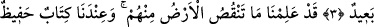
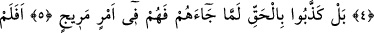
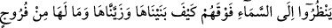
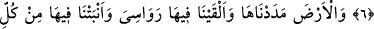

ARALARINDAN BİR UYARICININ
GELMESİNE ŞAŞTILAR
Bismillâhirrahmânirrahîm
1. Kaf. Şerefli Kur’an’a andolsun.
2. Aralarından bir uyarıcının gelmesine şaştılar da, kâfirler şöyle dediler: «Bu
şaşılacak bir şeydir.»
3. «Biz öldüğümüz ve toprak olduğumuz zaman mı (dirileceğiz)? Bu, akla uzak
bir dönüştür.»
4. Biz, toprağın onlardan neleri eksilttiğini kesinlikle bilmekteyiz. Yanımızda o
bilgileri koruyan bir kitap vardır.
5. Bilakis onlar, hak kendilerine gelince yalanladılar. Şimdi onlar şaşırmış bir
haldedirler.
6. Üstlerindeki göğe bakmazlar mı ki, onu nasıl bina etmiş ve nasıl donatmışız!
Onda hiçbir çatlak da yok.
7. Yeryüzünü de döşedik ve ona sabit dağlar koyduk. Orada gönül açan her
türden (bitkiler) yetiştirdik.
8. Allah’a yönelen her kula gönül gözünü açmak ve ibret vermek için (bütün
bunları yaptık).
Bu sûre “Kaf Sûresi” diye isimlendirilmiştir. Sûrenin başındaki “Kaf” ile ilgili şu
yorumlar yapılmıştır:
İbn Abbâs (r.a.),“Kaf”ın Allah’ın isimlerinden birisi olup yemin için kullanıldığını
söylemiştir. Muhammed b. Ka’b şöyle der: “Kaf” Kàdir, Kadîr, Kadîm, Kàhir, Kahhâr,